Paella (Spain)★
-
 8 servings
8 servings
-
 3
hours
3
hours
-
 Lauren Allen
Lauren Allen
-
 Meat
Meat
-
 Salty
Salty
-
 Umami
Umami
Cooked on September 4, 2023.
My fourteenth recipe! Spanish Paella is a delicious seafood rice dish served with seafood, chicken, vegetables, and a very expensive and potent seasoning called Saffron. The rice dish is usually cooked in a large pan, and then served with lemon slices. Paella can be cooked in a multitude of ways, such as using rabbit meat, chorizo, pork, and other vegetarian options. Shoutout to Ms. Small for the saffron!!
Rating 8/10, I made it with my Spanish friend and the paella turned out really great and the rice was very tender and had the socarrat at the bottom. The flavor was seafood-ey but not too much, and the chicken was very tender. The lemon slices also balanced the flavor well. I should’ve added more saffron to balance the color or food dye. Furthermore, using fresh seafood probably would’ve made it better.
Special equipment: Paelle pan (or a large pan/wok/skillet)
Preparation
2boneless chicken breast (thawed and cut into 2 inch pieces)1 piecebacalao- salt
- pepper
- water
Lightly coat the chicken pieces with salt and pepper. Mix until evenly coated.
Soak the bacalao piece in cold water for 4 hours, then rinse and set aside.
Cooking
3 cupswhite rice (washed)5.5 cupsbroth (from bouillon)1red onion (diced)1green bell pepper (diced)4 clovesgarlic (minced)3roma tomatoes (finely diced)2bay leaves1/4 cupextra virgin olive oil1 tspsmoked paprika4 strandssaffron threads (important)0.5 cupfrozen peas + corn + carrots1 lbwalmart seafood mix (thawed) – (calamari, shrimp, mussels, scallops)1lemon (sliced thinly)- salt
- pepper
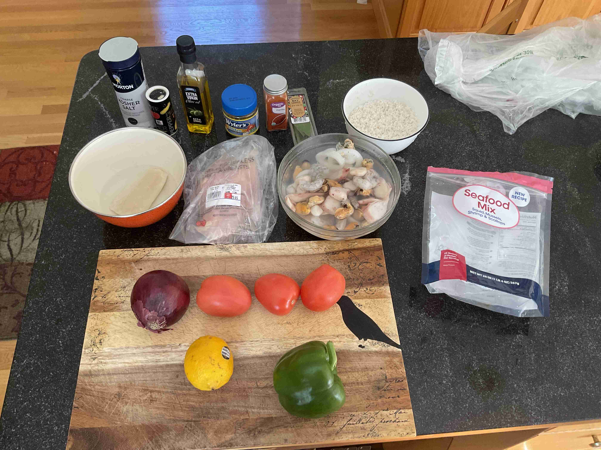
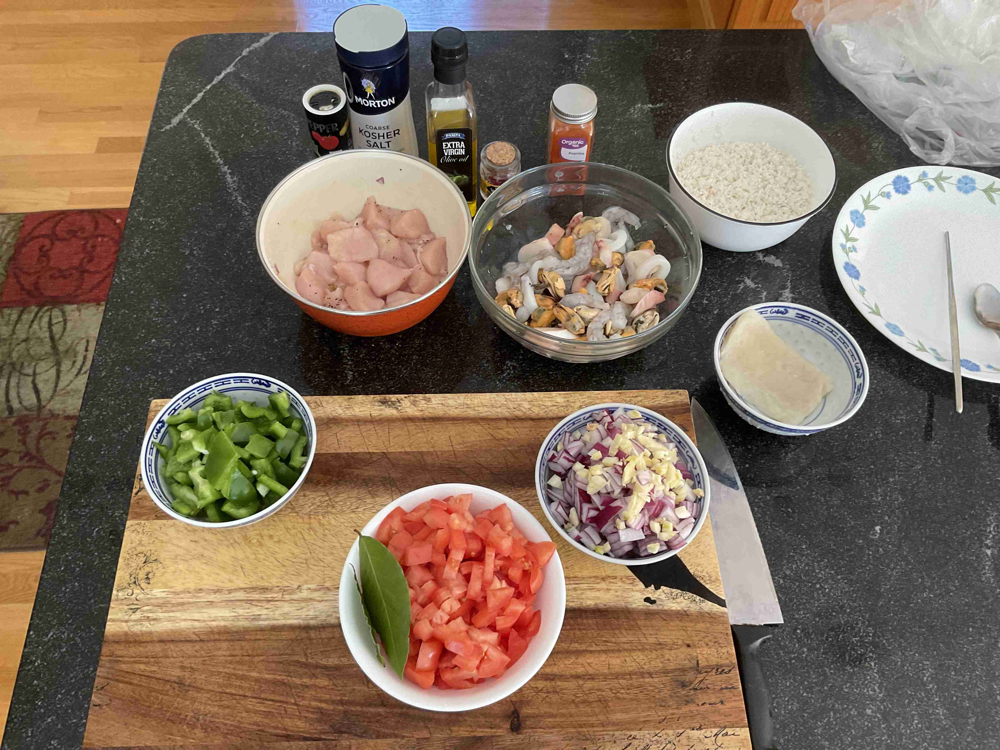
Boil 4 cups of water and add 4 bouillon cubes to make 4 cups of chicken broth. Set aside.
Boil another cup of water and cook bacalao for 6 minutes, or until soft. Break into pieces in a bowl and set aside.
Add extra virgin olive oil to a paella pan over medium heat. Add the onion, bell peppers and garlic and cook for 5-10 minutes.
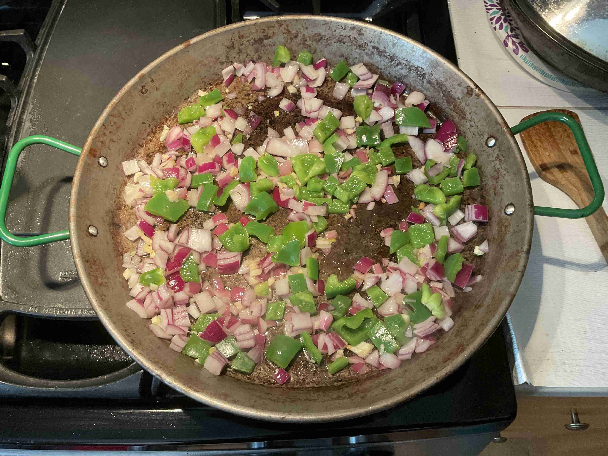
Add diced tomatoes, bay leaf, paprika, salt and pepper. Stir occasionally and cook for 10 minutes.
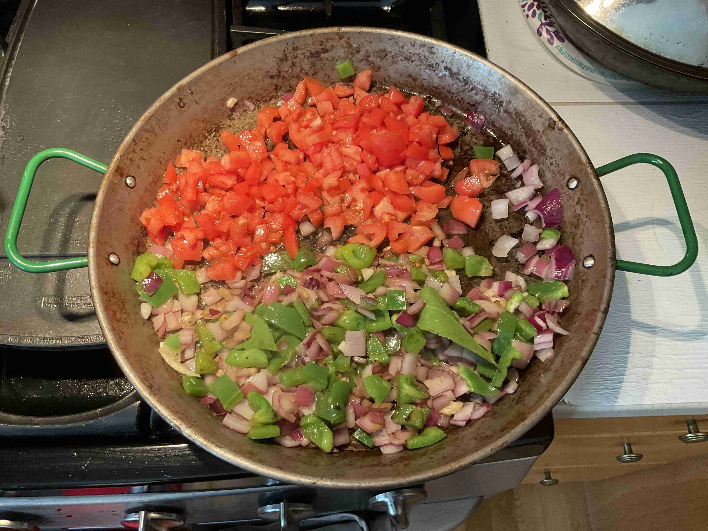
Add chicken pieces to sear for 5 minutes over high heat to the pan.
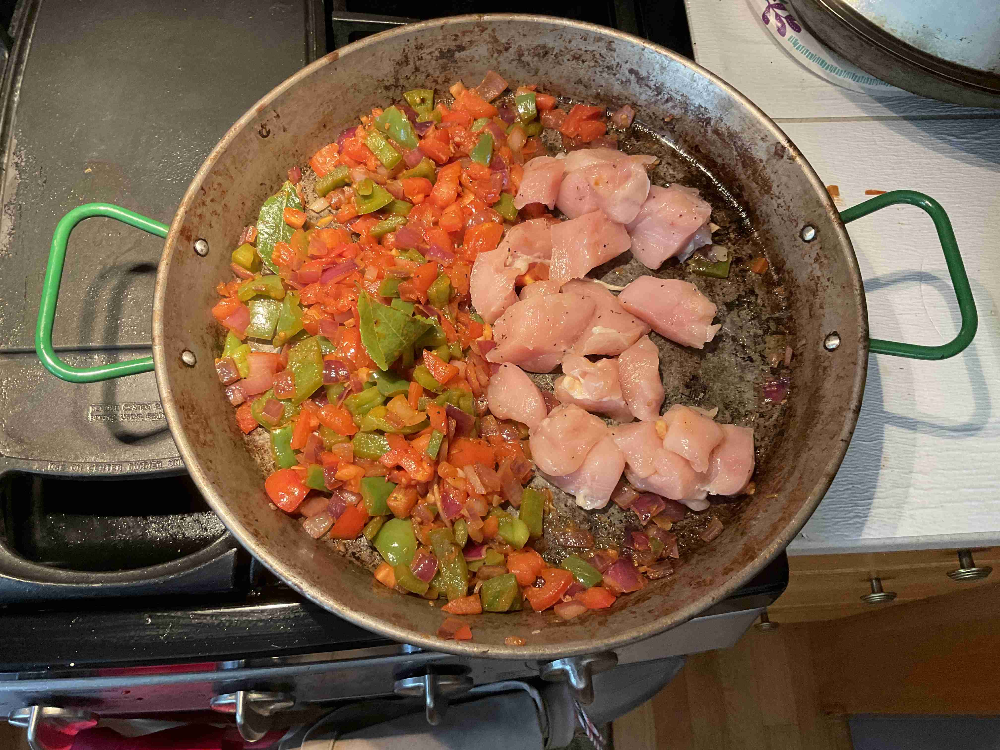
Then, stir in the rice for 1 minute and mix together until distributed evenly. Move the mixture to the center.
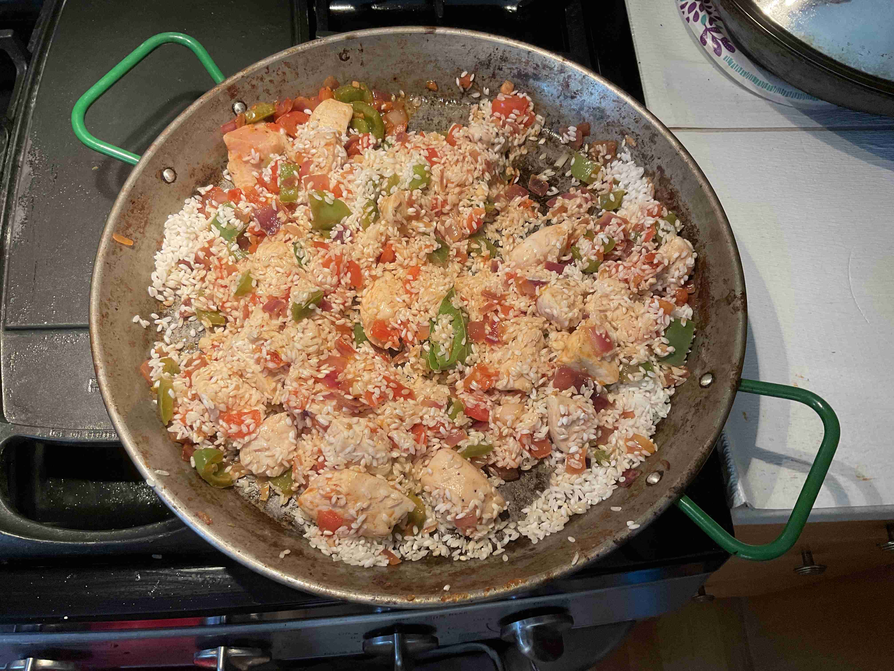
Pour the 4 cups of broth slowly all around the center and jiggle the pan to get the rice into an even layer. Flatten the mixture with a spatula. Let simmer for 5 minutes, then add the remaining 1.5 cups of broth. Continue to cook until broth is almost completely absorbed and rice is cooked (15-18 minutes).
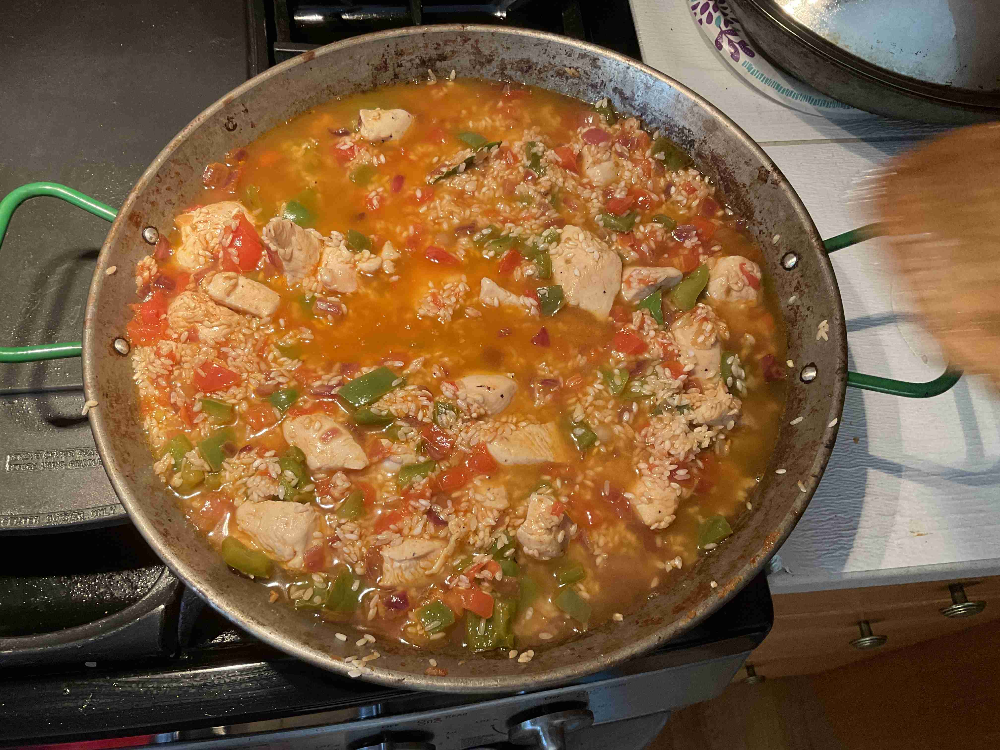
Do not stir the mixture going forward!
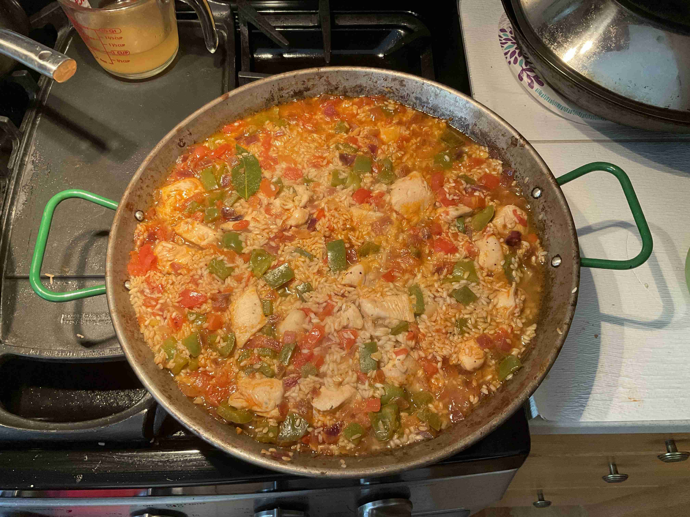
Nestle in the seafood mix into the rice. Sprinkle frozen peas and shredded bacalao on top. Cook until broth is completely absorbed.
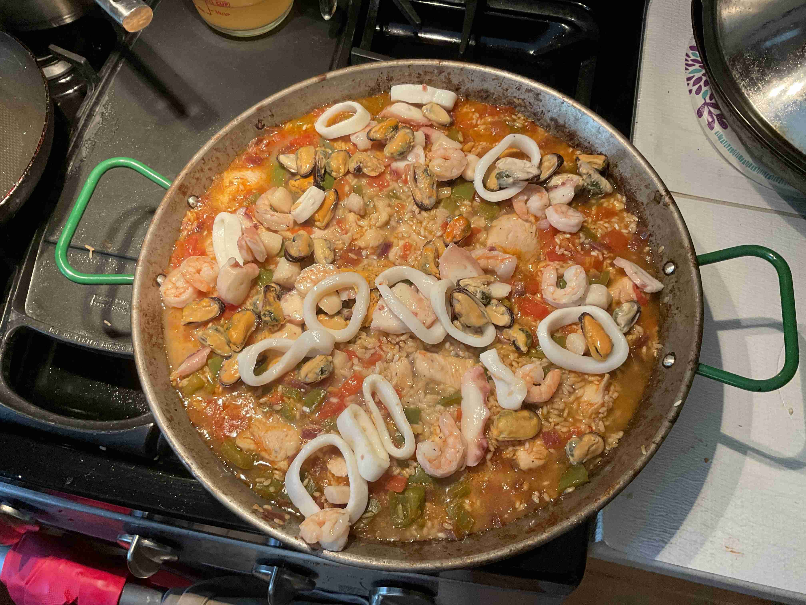
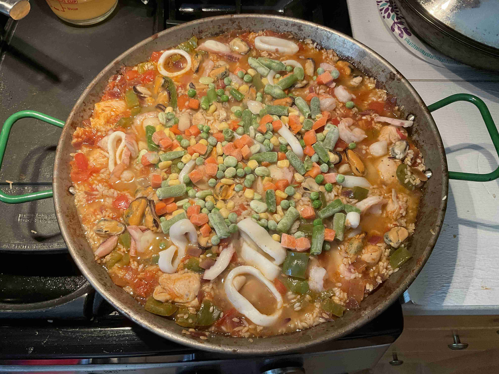
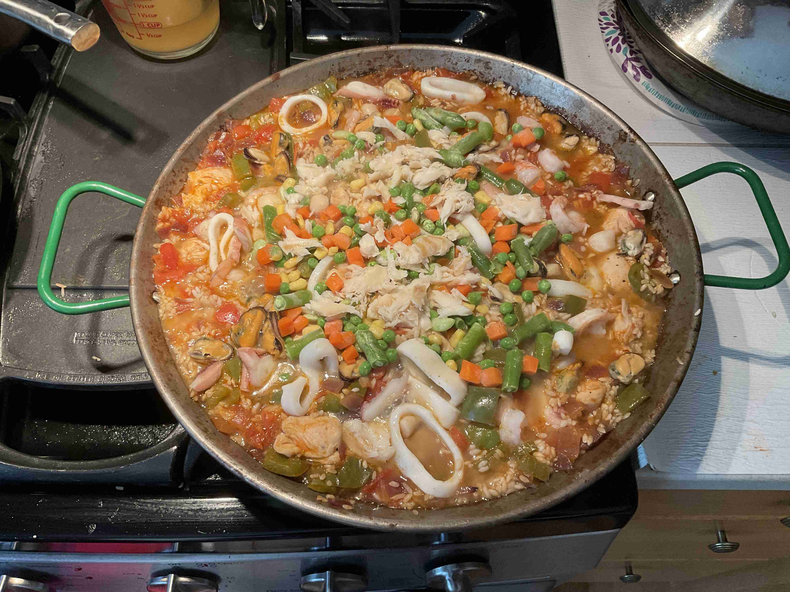
Once completely cooked, nestle lemon slices in the center in a circle. Let cool for 5-10 minutes.
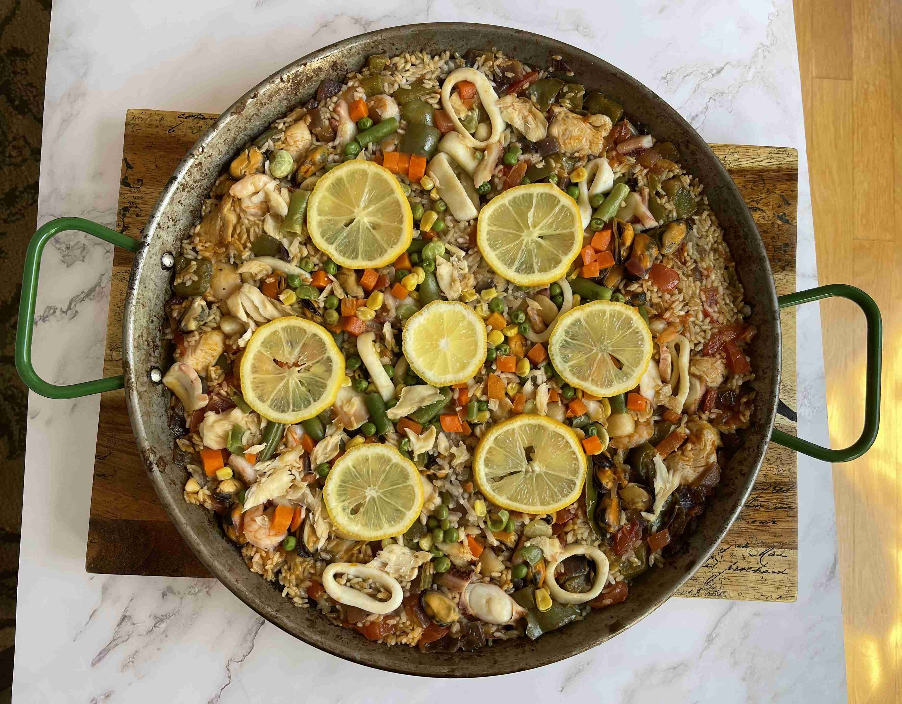
Juice half of the lemon over the rice, then cover with tinfoil and let rest off the heat for 10 minutes. Serve and enjoy while hot!
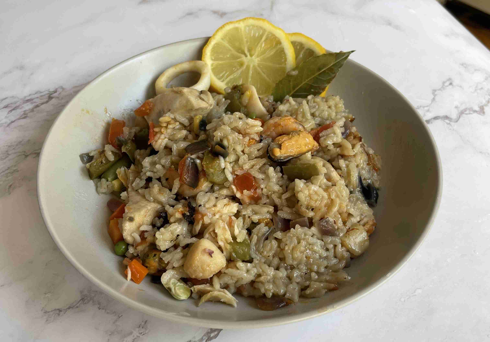